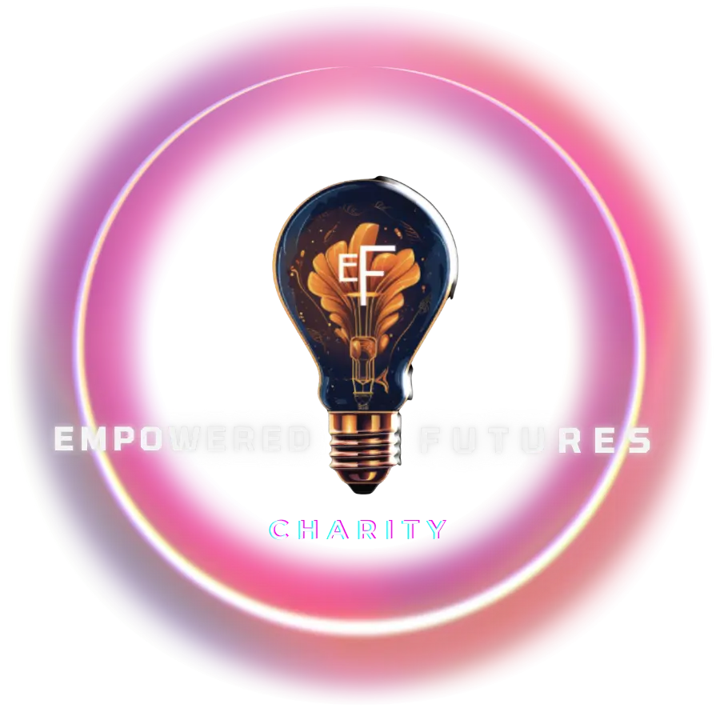
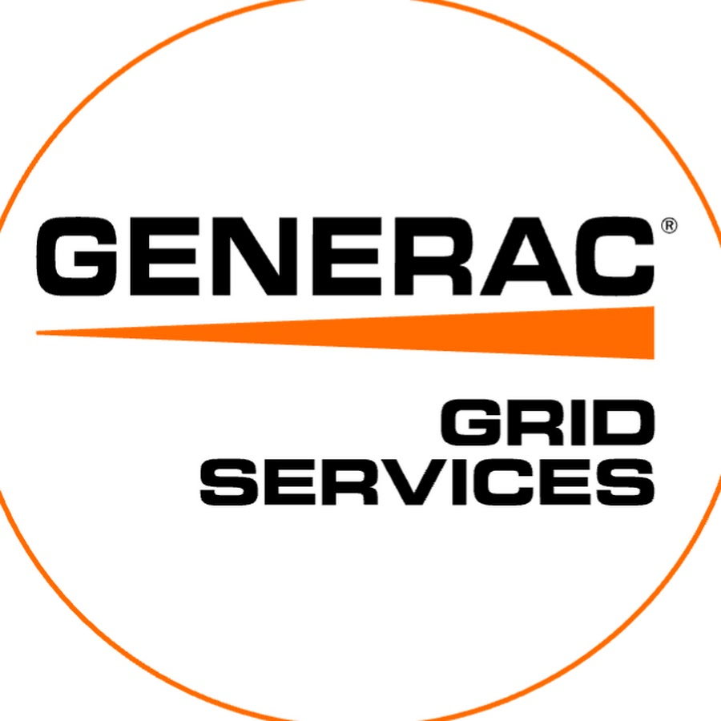

-
Full-Stack DeveloperEmpowered Futures | Vancouver, BC, Canada | Mar 2025 - Current
- Developed web applications using TypeScript, React.js, Next.js, Tailwind CSS for frontend, and Node.js, Express.js, GraphQL, and MongoDB for backend.
- Implemented user authentication with Express JWT middleware. Delivered the web app using Docker.
- Collaborated with team and participated in weekly sync-up meetings. Contributed to GitHub collaboratively. Performed code reviews to ensure code quality. Wrote documentation to facilitate effective knowledge sharing across the team.
-
NOC Operations Engineer – Level IIIGenerac Grid Services | Vancouver, BC, Canada | May 2023 – Jan 2025
- Automated operational processes using Python, RESTful APIs, GraphQL APIs, Linux, and many other technologies, developing 30+ automation scripts, including 13 fully automated Python scripts deployed on remote servers. Completed 100+ ad-hoc tasks with Python. Increased operational efficiency by around 30%.
- Managed the NOC team’s GitHub repository, script documentation, and program documentation.
- Supported program operations by managing data in Snowflake and PostgreSQL databases using SQL, maintaining Tableau data visualization dashboards, and working with AWS services such as EC2 instances, Kinesis Data Streams, and S3.
- Streamlined program operations by developing Standard Operating Procedures (SOPs). Designed CRM architecture for customer data management in Salesforce and HubSpot, enhancing customer relationship management processes.
- Coordinated with project managers and external partners for regular progress reviews of business programs, ensuring timely delivery and alignment with business objectives.
-
Data AnalystDunnhumby | Shenzhen, China | Aug 2020 – Feb 2021
- Provided data analysis consulting for Vanguard, one of the largest retailers in China, to enhance customer engagement and drive revenue growth. Handled 20+ ad hoc data analysis tasks with the processes of data cleaning, data visualization, statistical modeling. Python, Spark, SQL, and Excel VBA were used.
- Developed Python scripts to generate smart product recommendations on Vanguard's biweekly flyers. The script served as the backend algorithm for a web application which was sold to Vanguard as a SaaS tool. Utilized Gitlab for version control and managed internal documentation and customer guidance.
- Produced formal business reports to elaborate the analysis output and presented insights for Vanguard's business strategy team.